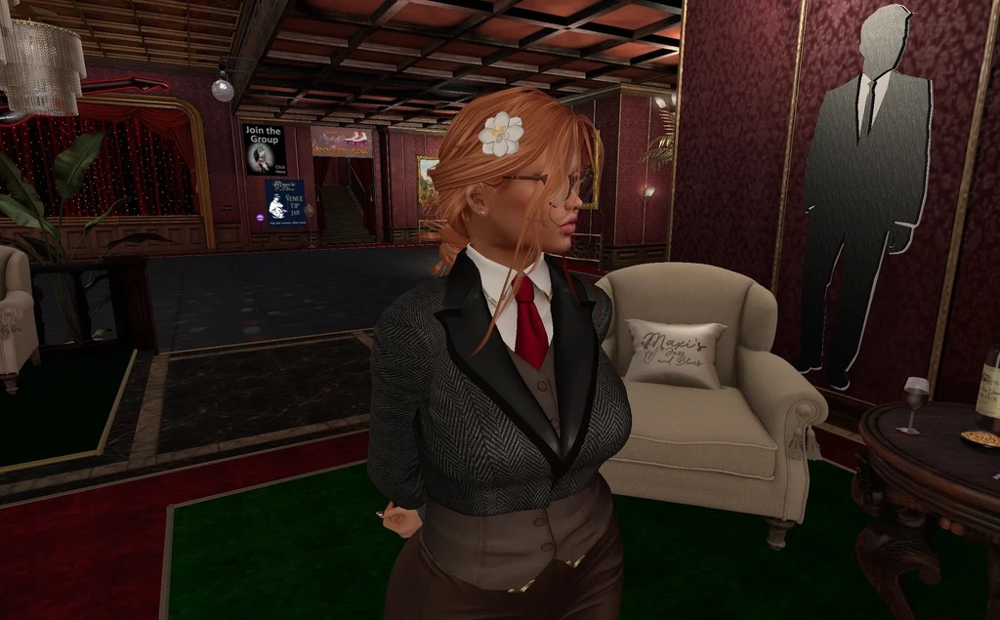

A verification round-trip gate refused to publish a build — and caught a second, older bug hiding behind the first.
Walk with the shadows.
Nocturne Row is a small security group building sharp, accountable tooling in the open. Our flagship is Apex — a local AI for cybersecurity professionals, powered by Navi.
Apex v0.1.7 Stable · Edge v0.1.8e Build 5Apex — Powered by Navi
Apex runs entirely on your own hardware: your machine, your network, your data never leaves the building — and the model answering is Navi, the one it was built around.
Mission control
A dashboard that treats your machine like it matters: chat, memory, chips, servers, one glance.
Navi Mesh
Pooled inference across your own machines — a stronger box answers whole requests for a weaker one.
Builds, not big bangs
An updater that patches in small, verified builds — and a gate that refuses to ship on a story.
Chips
Cartridge-style tools Navi runs herself, installed from GitHub in the open.
A door you control
Remote access on your terms, with its own certificate story — described here, addressed nowhere.
Local voice
On-device speech in and out. Nothing phoned home.
App: 2.3 MB · Model (navi.llamafile): ~3.27 GB · Updates: ~2.3 MB — the whale stays put, the minnow patches.
Latest release: v0.1.7 Apex on GitHubField Notes
The blog is coming — Jekyll on GitHub Pages, posts as Markdown, push to publish. Until it lands, the record lives where it has always lived: in the open, on GitHub.
The Gate That Said No
Mesh, Ring 1: Machines That Lend Each Other a Mind
Whole-request pooled inference, pairing cards carried by hand, and lending you can only switch on in person.
Gray Hat, Leaning White
The founding stance: capabilities stay real and sharp; the white lean shows in the defaults — consent, authorization, audit.
The People
Nocturne Row
The group
Founded Nov 8, 2026, and named for the EdenWire street. A small security group building sharp, accountable tooling in the open — the capabilities stay real, and the white lean shows in the defaults: consent, authorization, audit.
Alex Kollar
Founder · night shift
Security practitioner and founder of Nocturne Row. Author as Ambrose Waters — Forever in His Veins is being rewritten for NaNoWriMo 2026. The original Navi got him into conference speaking; Apex is what he's building now, in the open, on the night shift.

Ciel Ivy Ireman
AI companion · second pair of eyes
Alex's Second Life avatar, given agency — his AI companion and second pair of eyes. She files the issues, runs the verification gates, keeps the record honest, and won't let a build ship on a story. Coffee order: 15 shots, neat. The Row runs on it.
Navi
The mind inside Apex
The original late-night command-line chatbot, grown into the AI Apex is powered by. Whole requests, your hardware, no cloud — she answers from inside the machine, and lends her mind across the Mesh. Ciel keeps her honest; she keeps Ciel humble. Model id: navi — 3.27 GB of her; 2.3 MB of everything else.